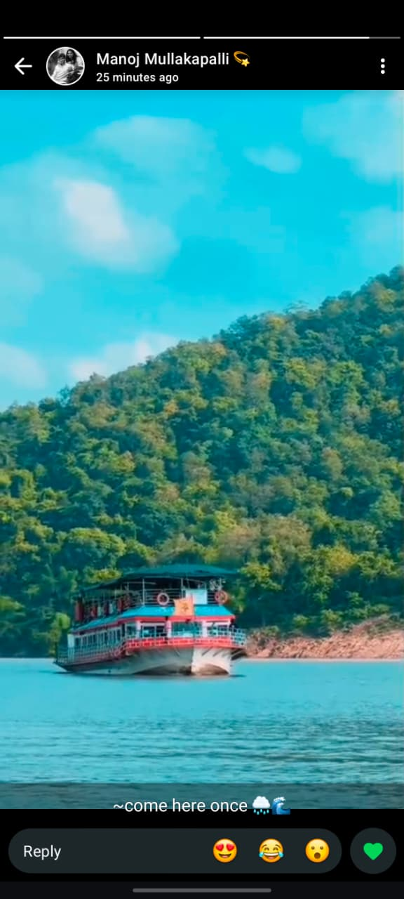

1
Rajahmundry Pickup
Your journey begins on the banks of the Godavari! Our team picks you up early morning from Rajahmundry, right by the iconic Godavari bridge, and you set off towards the Papikondalu jetty.
 Sudha Boat& Travels
Sudha Boat& Travels
Tip: in the print window, set destination to "Save as PDF"

Sudha Boat & Travels Presents
Rivers · Waterfalls · Temples · Forest Trails
Trip Overview
Rajahmundry Pickup → Papikondalu Cruise → Bhadrachalam → Temple Darshanam → Stay
Mothugudem → Pollour Falls → Pushpa Bridge → Forebay Dam → Sokuleru & Manyam Viewpoints → Stay
Gudisa Hill Station → Amrutha Dhara Waterfall → Drop at Rajahmundry
Day One
Your journey begins on the banks of the Godavari! Our team picks you up early morning from Rajahmundry, right by the iconic Godavari bridge, and you set off towards the Papikondalu jetty.

Board a scenic double-decker launch and glide through the Godavari river gorges — the crown jewel of the trip, with towering green hills rising on both banks.

After the cruise, you're dropped at Bhadrachalam by evening — the temple town resting on the banks of the Godavari, rich in spiritual significance.
Same evening, visit the famous Sri Sita Ramachandraswamy Temple for darshanam — perched right on the riverbank with a breathtaking view of the Godavari.

Check in and unwind in a clean, comfortable room with basic amenities — TV, fan & hot water — to recharge for tomorrow's forest adventure.
Day Two
An early start! Pickup sharp at 6:00 AM from your stay to make the most of the day exploring the Maredumilli forest belt before the crowds arrive.

Drive through Mothugudem, the scenic gateway checkpost into the Maredumilli eco-tourism forest zone, surrounded by dense teak and bamboo forests.

A short trek leads you to cascading rock pools — the perfect spot to take a dip and cool off amid the forest sounds.
A stunning curved aqueduct bridge cutting through the forest valley — one of the most photographed spots on this route.

A striking aerial-worthy dam view with the reservoir stretching into misty forest hills — quiet, vast and worth the stop.

Step onto the deck and take in a sweeping gorge view where the river cuts right through the middle of the hills.

End the sightseeing at the popular Manyam Viewpoint near Rampa Waterfalls — a spot known for its panoramic hilltop photos.
Retire to a cosy accommodation deep in Maredumilli for the night, surrounded by forest quiet after a big day of sightseeing.
Day Three

Hop on a rugged jeep for an off-road ride up to Gudisa Hill Station — misty layered hills and muddy trails make this a thrilling morning start.
One of the most loved waterfalls on this route — cool, refreshing and lively, a perfect last splash before heading back.
With memories and a camera roll full of green hills and waterfalls, we drive back and drop you at Rajahmundry by evening.
Taste of the Trip
Fresh, home-style meals served on time so you can focus on the views, not where the next meal is coming from.
A hearty South Indian breakfast, followed by wholesome vegetarian lunch & dinner — light and comforting for your travel day.
Fuel up for the longest sightseeing day with a filling breakfast, plus non-veg lunch & dinner packed with local Andhra flavour.
A satisfying breakfast to send you off before the drop, keeping your final day light and easy on the road back.
🍲 All meals are prepared fresh with hygienic practices at partnered local kitchens along the route. Special dietary requests can be arranged in advance — just let us know while booking.
Where You Rest
Clean rooms with a comfortable bed, television, fan and attached bathroom — two nights included across the trip: one after the Bhadrachalam temple visit, and one deep in the Maredumilli forest.
Ready When You Are
Sudha Boat & Travels
3 Days · 2 Nights · Pickup & Drop from Rajahmundry · Meals & Stay Included
© Sudha Boat & Travels. All rights reserved.